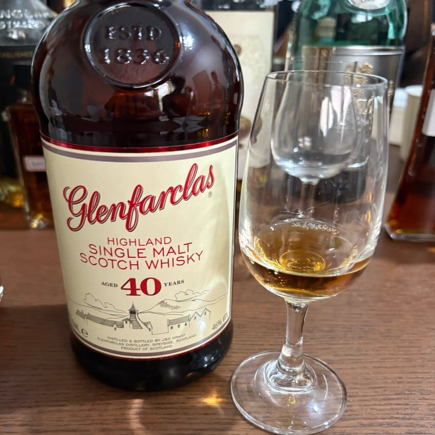
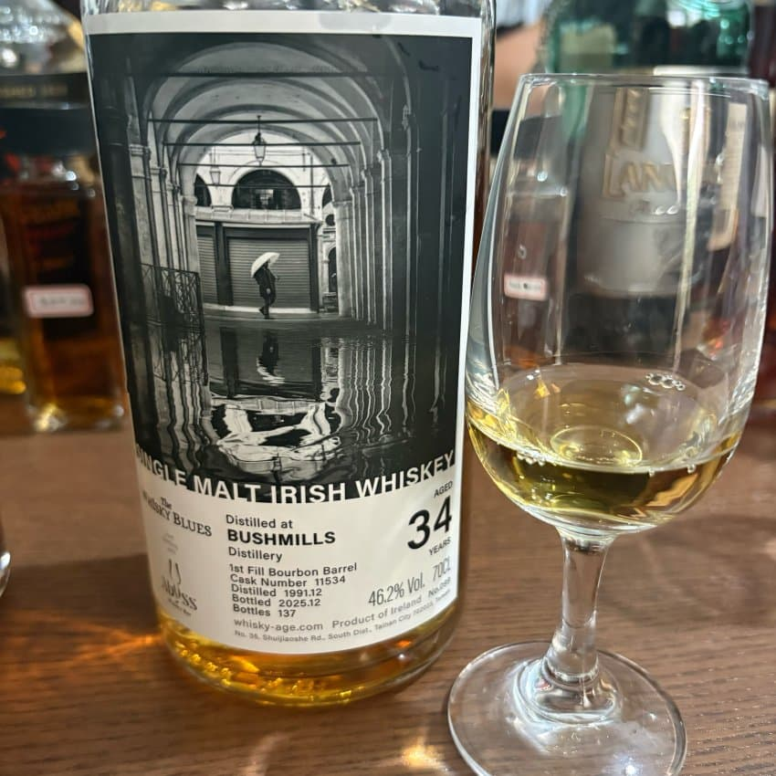

화사하고 좋음

구미젤리, 스무디 걍 이날 GOAT

평소 드로낙 너무 단순해서 안좋아하는데
이건 ㅆㅅㅌㅊ임 데일리로 먹고싶음
번데기
사케는 네병 다 맛났는데
센킨 모던이랑 아베랑 히란이 가장 맛났음
고기 미디움으로 야무지게 구움
넵
어흐
집에서 좀 멀긴 했지만 즐거운 시간이었습니다
이런 말도안되는 양의 고기는 물론 김치와 숯 등등 준비해주신
홀짝홀짝헤으응님 정말 감사했습니다.
이정도 스케일 비욥이라면 수원까지 갈법하네요. 어흐
image is not found
댓글 15개